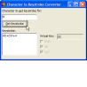
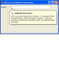
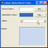
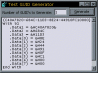

Tips Index
|  | Convert a Character Code to a string describing the Keyboard Keys which must be pressedDifferent keyboard layouts use different virtual key codes and shift combinations to represent character codes. This tip demonstrates how to convert a key code into the equivalent virtual key code and shift state, as well as how to provide the name of a virtual key on the keyboard. Last Updated: 27 June 2003 |
|  | Text Box Balloon tip support in XPThis tip demonstrates how to to use the new Balloon Tip support provided for TextBoxes under XP. Cue Banners may also work, but only if you don't have multiple language support installed. Last Updated: 26 June 2003 |
 | Create a VB Picture from a GDI Picture HandleThis tip shows you how create a VB Picture object from an GDI bitmap handle (hBitmap). This is useful if you are trying to provide VB users with a picture they can use from a GDI class. Last Updated: 28 March 2003 |
|  | Blend Two Colours Together Using AlphaIf you're not using GDI+ for drawing, then there isn't an easy way to determine what colour you would get if you blended two colours together with a specified alpha amount. This article provides a routine that allows you to do it using straight VB code. Last Updated: 28 March 2003 |
| Moving, Clicking and Tracking the MousePointer in CodeVB doesn't provide any way to determine where the mouse is regardless of which control its over. Neither does it allow you to move the cursor or emulate mouse clicks on objects. This tip provides a simple class which uses API functions to add this functionality. Last Updated: 7 January 2003 |
| Add File or URL AutoCompletion to TextBoxes and ComboBoxesDemonstrates how to add File System and/or URL AutoCompletion to a TextBox or Combo Box, using the same code used for the System Common Dialog file name, Start->Run dialog box and IE Address bar. Note that IE5 or above is required to use this function. Last Updated: 7 January 2003 |
|  | Create New GUIDsThis sample, from Dion Wiggins (dionwiggins@hotmail.com) shows how to use the CoCreateGuid and StringFromGUID2 functions to create a GUID. The code is compiled into an ActiveX DLL which gives the interesting possibility of using the code from an ASP page, or from other ActiveX-enabled scripting tools. Last Updated: 15 November 1999 |
| Copy the entire contents of a PictureBox to the clipboardVB does not allow you to copy the full picture of a Form, UserControl or PictureBox to the clipboard. If you use Clipboard.SetData, it only copies a bitmap loaded into these objects. You can get around this limitation and ensure the entire contents are copied, including any graphics you have drawn, by using API methods. Last Updated: 18 September 1999 |
| Text Box control - adding Cut, Copy, Paste, Undo and Delete command supportThis tip demonstrates how to simply add Cut/Copy/Paste and Undo support to a Visual Basic TextBox. Last Updated: 18 August 1999 |
| Generating Long Sequences of Unique NumbersSometimes it is very useful to be able to generate a long sequence of unique numbers. This tip provides a method to generate long sequences which are not consecutive by using a shift register approach. Last Updated: 18 August 1999 |